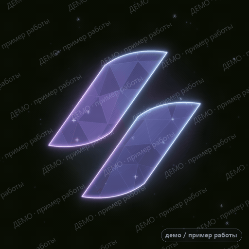

демо · пример работы
Анимация логотипа: иней → снежинка → логотип

- Плавный морф по форме. Точки контура знака перетекают в лучи снежинки и обратно, без кроссфейда и рывков.
- 100 кадров, 25 fps. Иней растёт папоротниковыми кристаллами по контуру, мягкая вспышка в момент превращения, неоновое свечение.
- Бесшовная петля. Последний кадр переходит в первый без скачка; фон строго #080C02.
Демо на временном знаке; с вашим SVG соберу такой же ролик. Без водяного знака после согласования.